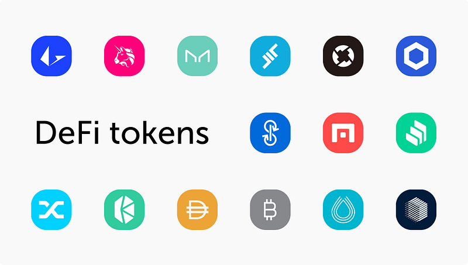
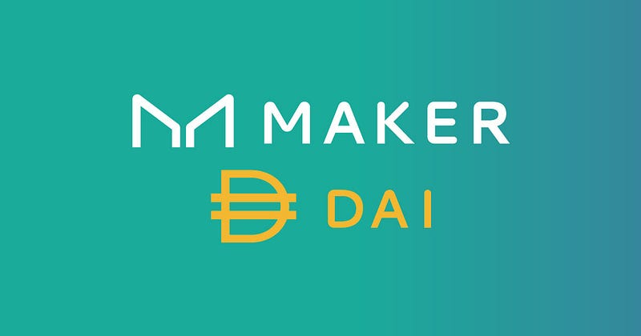
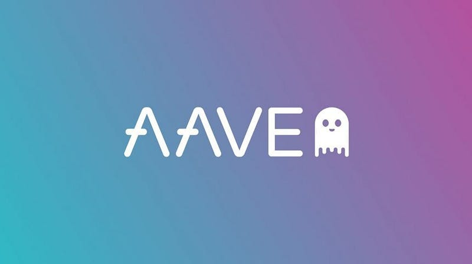
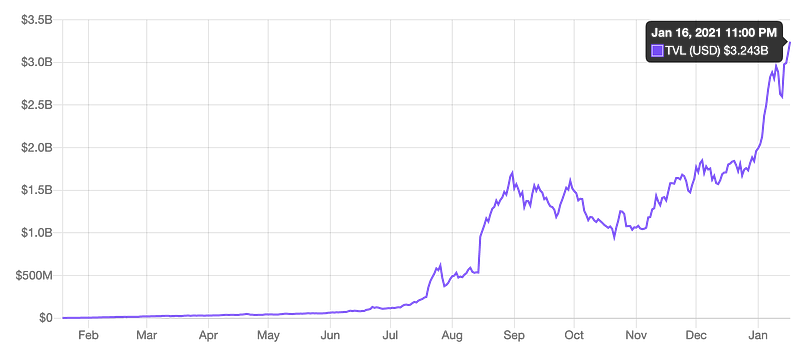
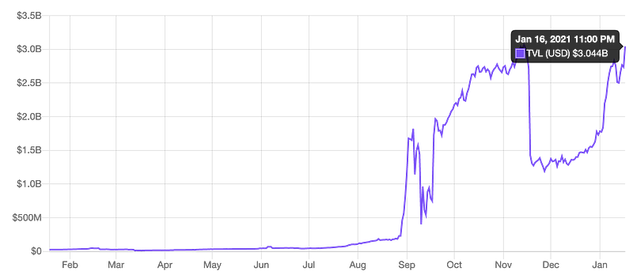
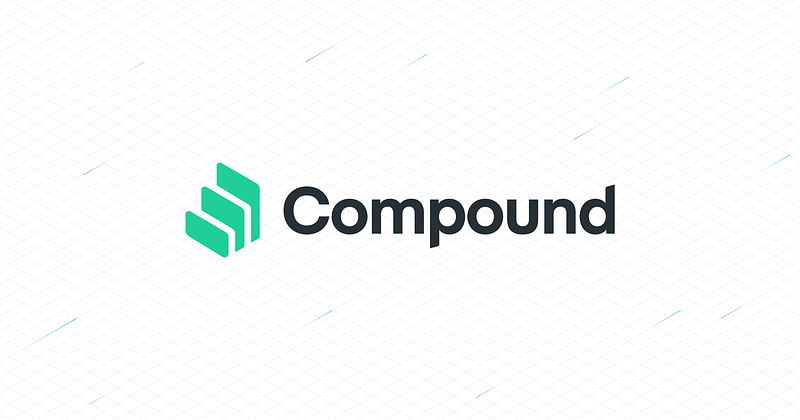
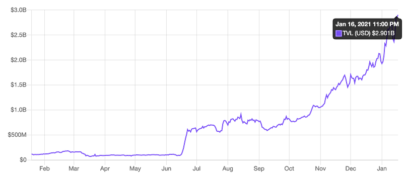
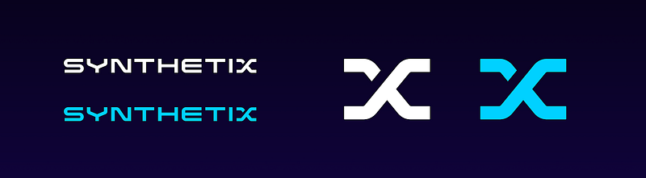
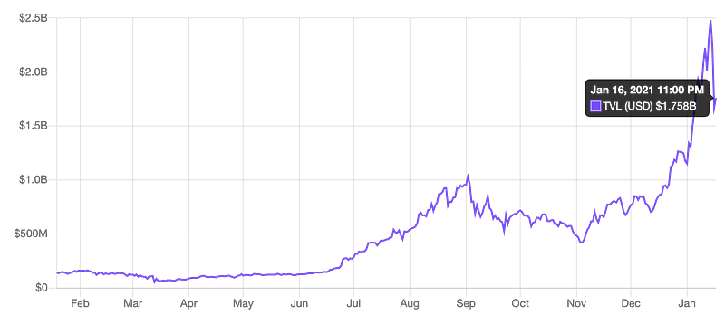

Stablecoins in DeFi.

An important piece in the crypto world is the use of stable coins. Currently the most widely used are the Dai stable coin, the USDC, and Tether stable coin.
Stable coins are issued by blockchain and maintain a link to fiat currencies like the US Dollar to maintain its stability in its price and reduce the levels of volatility normally associated with other cryptocurrencies.
Stable coins are back in a number of ways:
Crypto-backed
Crypto backed stable coins are coins that use other cryptocurrencies as collateral. This support is carried out on blockchains with the use of smart contracts.
Fiat-backed
These stable coins are backed by fiat currency, predominately the US Dollar. These are the most common stable coins available.
Commodity-backed
Stable coins backed by commodities have their value pinned to precious metals such as Gold and Silver. Stable coins backed in this manner are less prone to inflation than Fiat backed coins are.
Some of The Best DeFi Projects Right Now.

The Ethereum blockchain network plays a huge role in DeFi and in fact the majority if not all DeFi applications are built on the Ethereum network.
Below I have listed some of the best and most interesting projects right now in the DeFi space that utilise the Ethereum network.
To see the latest figures and get more information on all of these projects you should visit defipulse.com.
(Information provided below is from Defi Pulse).
Maker

The Maker platform supports the Dai stable coin.
Through the Maker platform, you can provide collateral to generate Dai against the collateral you provide. This Dai then occurs interest which is paid upon repayment of the borrowed Dai.
Maker also has a feature called the Dai Savings Rate (DSR). DAI holders can lock their DAI into Maker’s DSR contract and earn a variable interest rate in DAI, which is generated from stability fees.
Maker currently ranks no.1 on the Defi Pulse list with a total value of $4.17 billion USD.
Aave

The Aave token is the native token of the Aave protocol.
The protocol itself provides lending and borrowing in many ERC-20 Ethereum tokens through liquidity pools. When you contribute to these pools you can earn a certain level of variable interest.
Aave also offer loans which,
Aimed at developers, this feature could lead to innovative uses of DeFi. Aave’s native governance token is LEND; the only fees are 0.25% of originated loans and 0.09% of flash loans; these go toward burning LEND, rewarding lenders, and compensating affiliates.
Aave currently ranks no.2 on the Defi Pulse list with a total value of $3.24 billion USD.

Uniswap
Uniswap is a token exchange platform in which you can exchange tokens to any other ERC-20 as well as allowing you to earn interest on providing liquidity.
As well as this Uniswap allows anybody to create liquidity pools.
By supplying an equal value of ETH and an ERC20 token. Uniswap allows only one market per ERC20 token. The market creator sets the exchange rate, which shifts through trading due to Uniswap’s “constant product market maker” mechanism. When trading reduces one side of the pair’s liquidity relative to the other, the price changes. This creates arbitrage opportunities, encouraging more trading.
Uniswap currently ranks no.3 on the Defi Pulse list with a total value of $3.04 billion USD.

Chainlink
Chainlink is an interesting project that looks to solve an inherent problem with blockchains and smart contracts.
The nature of blockchains means they are very secure and are able to interact with information and resources that are currently on the blockchain but they don’t have the functionality to interact with resources that are external to the blockchain in the same secure fashion.
Chainlink seeks to remedy this by building secure oracles that connect the smart contracts to those external resources and allow them to interact with real-world information in the same secure and reliable fashion.
This project is one of those that is building technology that can really drive DeFi projects forward and open up new developments and opportunities not only for developers but also for users in the future.
Compound

Compound is again another platform that allows you to borrow, lend, and earn interest against the amount that you have staked to Compound liquidity pools.
Compound just like Maker operates through community governance of the platform that allows holders of the native COMP tokens to propose changes and vote on any changes to the protocol.
Compound currently ranks no.4 on the Defi Pulse list with a total value of $2.90 billion USD.

Synthetix

Synthetix platform exists on the Ethereum blockchain to create synthetic assets that track the value of assets that exist in the real world.
The assets that are tracked range from Fiat currencies, crypto, and commodities all the way up to indices and stocks.
Synthetix has a native token called SNX. Holders can lock in collateral such as SNX and ETH to mint Synths, which are freely tradeable ERC20 tokens. Transaction fees from Synths exchanged on Synthetix’s non-custodial DEX (Synthetix.Exchange) go to SNX holders/Synth minters, incentivizing Synth creation and giving value to the underlying collateral (i.e., the SNX token).
Synthetix currently ranks no.7 on the Defi Pulse list with a total value of $1.75 billion USD.

What In Store For The Future.
The DeFi space will continue to grow and if you read predictions made by investors and commentators alike you find that a lot of talk about the rapid growth in terms of the value of DeFI projects and the crypto space in general.
The current financial system has a legacy of leaving people out and contributing to the inequality of opportunities. The current global pandemic has shown just how vulnerable small and medium-sized business are susceptible to conditions that don’t allow them to operate at full capacity and has really brought to the surface how much people struggle when their income drys up and also how badly the economy is it by such disruptions.
Imagine if a decentralised system existed where P2P borrowing and lending exists and could allow people to get quick access to finance that could help not only individuals but also their businesses instead of waiting for governments to act or in some cases hope that the government will do something to help them out. I’m not saying DeFi in a position right now to really help in the current situation but it's a curious idea that could help in the future.
I feel though that DeFi does need to clear some hurdles in the coming years to really position itself as something that can gain mass adoption and be a real challenge to the current centralised financial system that is used today. These solutions however are already underway.
Ethereum 2.0 update
The Ethereum 2.0 update looks to address notable issues on the Ethereum network namely scalability, speed, capacity, and sustainability.
Right now the Ethereum network can suffer from high gas prices on the network and congestion from the number of transactions carried out on the network. The coming upgrade with help alleviate these problems through sharding to reduce network bandwidth and gas prices related to transactions, whilst at the same time making the network and applications more scalable by giving them the resources and tools needed to grow them whilst simultaneously making then cheaper and faster.
Sustainability is another issue that has been highlighted with crypto in general. The energy required to mine cryptocurrency is huge. With Ethereum moving to proof of stake instead of the proof of work concept it has been using this will mean that validators on the network will stake crypto in order to verify transactions instead of miners using computer hardware in an energy intensive manner to verify transactions through mining.
The results of this will be a less energy-intensive way of operating the network.
Diversify projects
Right now the majority of d-apps are centered around borrowing and lending but this is just the beginning. As expressed by Emma Cassel at Entrepreneur:
Getting paid for freelance work and reaching agreements with freelance specialists is also made easy and safe with smart contracts. Ethlance is a blockchain job board that allows payments only in cryptocurrency. There is also a crypto-collectibles world where artists can tokenize their work and the buyer can display it in their virtual gallery. Unlike traditional cryptocurrencies, these tokens are non-fungible which means that every asset is unique or limited in quantity. There are already marketplaces for these collectibles such as Rarible, and VR galleries where they are displayed such as Cryptovoxels.
Usability
Right now the DeFi space is complex land with lots of jargon and new terminology. It can be off-putting to newcomers to the space to get around everything from exchanges, wallets, blockchains, and even the variety of tokens that exist.
A move towards DeFi applications that use a single login to manage everything like this will come. Changpeng Zhao, Founder & CEO, Binance gave his thoughts on this back in December:
there will soon be a day where DApps are as user friendly as the centralized applications they’ll be replacing. This is firmly a matter of when, not if.
Today, the DeFi ecosystem is a little bit of a walled garden, which is counterintuitive, seeing as all anyone needs to get started with DeFi is an internet connection and mobile phone or computer.
In the interim, it’s up to centralized exchanges like ours to bridge the gap between centralized and decentralized finance, and provide simple and intuitive products that anyone can use.
I will be writing more on DeFi and sharing more of my thoughts and the thoughts of others in this space. One of my goals this year will be to get involved in blockchain development as well as produce a website for people to visit that will provide links and information to everything you will need to get started, learn more about DeFi and the platforms that exist in this space as well as provide information on how you can get involved with development.
Keep your eyes open.
Newer: Can Apple make the future Augmented…
Older: Why I started coding.
First published on Medium.